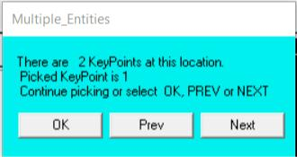
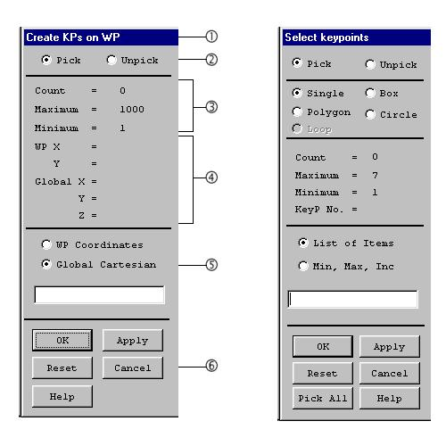

1.6 Graphical Picking
Many functions in the ANSYS program involve graphical picking - using
the mouse to identify model entities and coordinate locations. There are three
types of graphical picking operations:
- Locational picking, where the coordinates of a new point are located.
- Retrieval picking, where existing entities are identified for subsequent
operations.
- Query picking, where points are identified on the model for querying
data.
Mouse Button Assignments for Picking
Mouse button assignments during any picking operation are as follows:
- The left button picks or unpicks the entity or location closest to the
mouse pointer. When this button is pressed, the analyst can cross-
examine the entity numbers before they are picked, and thus
query data. Press and drag the left mouse button to preview the
item being picked or unpicked.
- The middle button (shift-right button on a two-button mouse) is
the same as the Apply button on the picker. A number of items
can be picked, and no operations will take effect until Apply or
OK is pressed. If there are no items currently picked, the middle
button closes the picker.
- The right button toggles between pick and unpick mode. This
button is the same as the Pick and Unpick toggle buttons on the
picking menu.
Hot Spots
Hot spots are the locations on an entity that identify it for retrieval
picking. For example, if two elements are adjacent, the element that is picked
is the one whose hot spot is closest to the mouse pointer. For areas, volumes,
and elements, the hot spot is at a location near the centroid. Lines have three
hot spots: one in the middle and one near each end.
If the hot spots of two or more entities are coincident, picking the
coincident entities brings up a "Multiple Entities" dialog box (Fig. 1.29). Press
the Next or Prev button to "cycle through" the coincident entities until the
desired entity is highlighted. Then click OK to pick that entity.

Fig. 1.29 Multiple Entities Dialog Box
1.6.1 Locational and Retrieval Picking
Whenever graphical picking (clicking on a menu topic ending with
the + symbol) is used, the GUI brings up a picking menu, sometimes known
as the picker. Figure 1.30 shows the picking menus for locational and retrieval
picking. In this example, creating keypoints by picking their locations on the
working plane is a locational picking operation, and picking those keypoints to
apply a load on them is a retrieval picking operation.

Fig. 1.30 Picking Menus for Locational and Retrieval Picking
- Function Title - Identifies the function being performed.
- Pick Mode - Allows to pick or unpick a location or entity. Either these
toggle buttons or the right mouse button can be used to switch
between pick and unpick modes. The mouse pointer is shown as an up
arrow for picking and a down arrow for unpicking.
For retrieval picking, choose among single, box, polygon, circle, and
loop mode. In single pick mode, each click on the mouse picks one entity.
With box, polygon, and circle modes, press and drag the mouse to enclose a
set of entities in a box, polygon, or circle.
Loop mode is available for picking lines and areas only. With loop
mode, when the analyst picks on a line, then the complete set of lines (or
areas) defining a continuous loop including that line is also picked. This
feature is useful when it is necessary to identify continuous lines in order to
make an area. For all modes of retrieval picking, ANSYS shows the picked
entities highlighted for visual clarity.
- Pick Status - Shows the number of items picked ("Count") and the
minimum and maximum number of picks required for the function.
- Picked Data - Shows information about the item being picked. For
locational picking, the working plane and global Cartesian coordinates
of the point are shown. For retrieval picking, this area shows the entity
number. This data can be seen by pressing and dragging the mouse in
the graphics area. This allows to preview the information before
releasing the mouse button and picking the item.
- Keyboard Entry Options - In some cases, it may be necessary to
enter the required data by keyboard in the picker. For example, to
specify a known coordinate location during locational picking, it may be
easier to enter the coordinates than to use the mouse. In that case,
the analyst can choose between working plane coordinates and global
Cartesian coordinates. For retrieval picking, choose between entering a
list of entity numbers (such as 1,21,343,...) and a range of numbers
(such as 1,21,2).
- Action Buttons - This area of the menu contains buttons that take
action on the picked entities, as follows:
OK - Applies the picked items to execute the function and closes the picking
menu.
Apply - Applies the picked items to execute the function but does not close
the picking menu. Use this button on the menu or stay in the graphics area
and click the middle mouse button to apply.
Reset - Unpicks all picked entities and restores the menu and the graphics
area to their state at the last Apply.
Cancel - Cancels the function and closes the picking menu.
Pick All - Picks all entities, executes the selected function, and closes the
picking menu. This feature is available for retrieval picking only.
Help - Brings up help information for the function being performed.
1.6.2 Query Picking
The picker can be used to "Query" data on the model at any time
during the analysis. Querying means that, for any picked point on the model,
ANSYS will retrieve or calculate specified items from the database and display
them. This information can be displayed in an output window, or it can be
applied to the model as 3-D annotation. Query picking is a retrieval picking
function, with the selection box items varying according to the requested
data. The model and results query pickers are discussed in the following
sections.
1.6.2.1 The Model Query Picker
The model query picker allows to access model information by picking
displayed entities. It also performs basic computations to provide simple
geometric/loading information. The model query picker can be used to obtain
information about the model while building it. This is helpful when building on
to an existing model, or for applying forces or loads that are dependent on
the model data. The model query picker can be accessed by choosing Utility
Menu> List> Picked Entities, at any time during the analysis.
Annotation
When the model query picker is used to obtain model information,
ANSYS displays the information in a text window. That information can also
be applied to the model as 3-D annotation by checking the "Generate 3D
Anno" box on the picker. The annotation is applied with the appropriate units
displayed, and arrows and leaders are attached where necessary. 3-D
annotation, unlike 2-D, will attempt to retain the proper positioning on the
appropriate entities, even when the model is rotated or resized.
The overall 3-D dimensions of the model are defined by a bounding
box. If portions of the model's bounding box lie outside of the visible area of
the graphics window, it can affect the placement of the 3-D annotations.
Zooming out will usually overcome this problem.
Modify query annotation using Utility Menu> PlotCtrls> Annotation>
Create 3D Annotation. Select "Options" to modify the typeface and move,
copy, or resize the annotation.
Action Buttons
- OK - Enters all query data and either displays it in a window or applies
it to the model. The model query picker is then closed.
- Apply - Enters all query data and displays it in a window or applies it to
the model. The model query picker is left open for additionals
operations.
- Reset - Clears all query data.
- Cancel - Clears all query data and closes the model query picker.
- Pick All - Accesses all of the selected query items on the model.
- Help - Brings up this screen of help information.
Tips on Using the Model Query Picker
The model query picker is accessible at any time during the analysis. It
is useful for determining model database information that would require hand
calculations to determine. The computations performed by the picker are not
displayed until OK or APPLY is pressed.
The items selected by the picker are highlighted before they are
actually selected. Hold the left mouse button down and move the pointer
around the model to ensure that the proper entity is selected. The analyst can
select multiple items, with no computations being performed or annotation
applied until OK is clicked. The commands and operations performed by the
model query picker are not written to the log file.
The annotation that is generated during the preprocessing stage can
be displayed at any time during the analysis. This information is not modified
or updated during the course of the analysis, and can become invalid. For
instance, when a shape is deformed by the applied forces, the area and
volume annotations created before applying the force will not change, and
the information displayed may be incorrect.
1.6.2.2 The Results Query Picker
The most convenient way to review results for specific points on the
model is by using the results query picker. Querying means that, for any
picked point on the model, the ANSYS program will retrieve a specified results
data value from the database and display it. Access the results query picker
by choosing Main Menu> General Postproc> Query Results. The analyst can
query nodal or element solution data.
When this GUI path is choosen, the results query picker for element
solution data appears. This menu has most of the same items as the
locational and retrieval picking menus:
- Function Title - Identifies the information being queried; either nodal,
element, or subgrid solution data.
- Pick Mode - Allows to pick or unpick a location on the model to be
queried. These toggle buttons or the right mouse button can be used
to switch between pick and unpick modes. The mouse pointer is shown
as an up arrow for picking and a down arrow for unpicking.
- Picked Location - Shows the number and location of the node,
element, or subgrid point being picked for query. This information can
be previewed by pressing and dragging the mouse in the graphics
area. The picked location is highlighted on the model as a square on
the displaced shape.
- Queried Data - Shows the queried solution data for the node, element,
or subgrid point at the picked location. Use the Max or Min buttons to
automatically obtain the maximum or minimum value of the query data
over the entire model.
Annotation
The results query picker retrieves solution data from the database and
displays it in a text window. That information can be applied to the model as
3-D annotation by selecting the “Generate 3D Anno” box on the picker. The
annotation is applied with the appropriate units displayed, and arrows and
leaders are attached where necessary. The overall 3-D dimensions of the
model are defined by a bounding box. If portions of the model's bounding box
lie outside of the visible area of the graphics window, it can affect the
placement of the 3-D annotations. Zooming out will usually overcome this
problem. Unlike the model query picker, the results query picker displays the
actual data on the model as the mouse pointer is moved over the different
entities. This function is available only from the General Postprocessor.
Action Buttons
- OK - Clears all query data and closes the results query picker.
- Apply - Clears all query data and brings up the Query Solution Data
dialog box again. This button can be used on the picking menu or stay
in the graphics area and click the middle mouse button to achieve the
same effect.
- Reset - Clears all query data.
- Cancel - Clears all query data and closes the query picking menu.
- Min - Shows the minimum value of the query data over the entire
model.
- Max - Shows the maximum value of the query data over the entire
model.
- Help - Brings up this screen of help information.